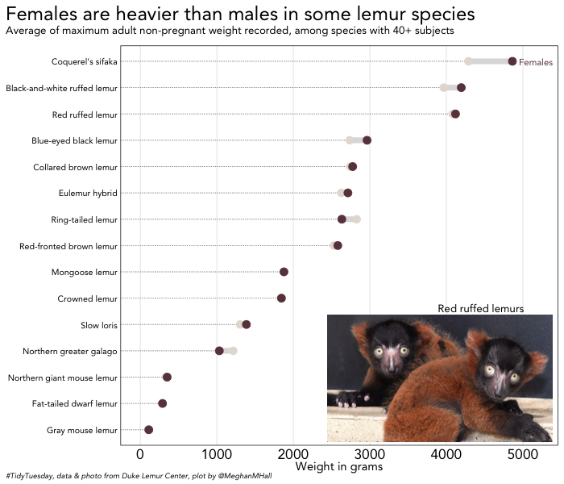
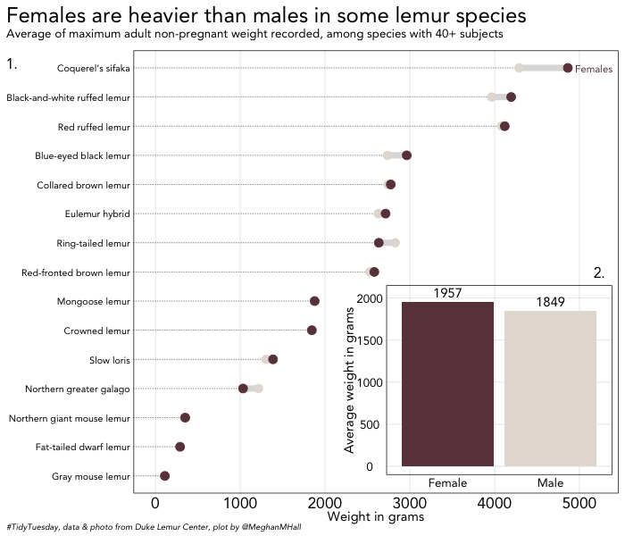
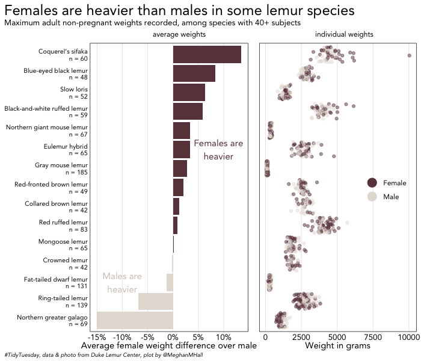

This week’s #TidyTuesday data set is all about lemurs (with data from the Duke Lemur Center), so I figured I would stick with the animal theme and discuss a few functions from Claus Wilke’s cowplot package, which is my personal favorite package for arranging plots made in R.
(Because everyone always asks: I believe the package name comes from the longhorn mascot of the University of Texas, with which Wilke is affiliated.)
Today’s data
The data set can be read in directly from the Tidy Tuesday Github repo as follows:
lemurs <- readr::read_csv('https://raw.githubusercontent.com/rfordatascience/tidytuesday/master/data/2021/2021-08-24/lemur_data.csv')cowplot is available on CRAN, so it can be installed if necessary with install.packages("cowplot") and then loaded with the other packages needed for today’s plots. I also loaded a tibble of some common species names, available in the Tidy Tuesday readme, to match with the taxonomic codes.
library(tidyverse)
library(cowplot)
library(scales)
library(ggalt)
meg_theme <- function () {
theme_linedraw(base_size=11, base_family="Avenir") %+replace%
theme(
panel.background = element_blank(),
plot.background = element_rect(fill = "transparent", color = NA),
legend.background = element_rect(fill = "transparent", color = NA),
legend.key = element_rect(fill = "transparent", color = NA),
axis.ticks = element_blank(),
panel.grid.major = element_line(color = "grey90", size = 0.3),
panel.grid.minor = element_blank(),
plot.title.position = "plot",
plot.title = element_text(size = 18, hjust = 0, vjust = 0.5,
margin = margin(b = 0.2, unit = "cm")),
plot.subtitle = element_text(size = 10, hjust = 0, vjust = 0.5,
margin = margin(b = 0.4, unit = "cm")),
plot.caption = element_text(size = 7, hjust = 1, face = "italic",
margin = margin(t = 0.1, unit = "cm")),
axis.text.x = element_text(size = 13),
axis.text.y = element_text(size = 13)
)
}
species <- tribble(
~"taxon", ~"species",
#--|--|----
"VRUB", "Red ruffed lemur",
"PCOQ", "Coquerel’s sifaka",
"VVV", "Black-and-white ruffed lemur",
"EMAC", "Black lemur",
"ECOL", "Collared brown lemur",
"LCAT", "Ring-tailed lemur",
"ERUF", "Red-fronted brown lemur",
"EUL", "Eulemur hybrid",
"ECOR", "Crowned lemur",
"EFLA", "Blue-eyed black lemur",
"EMON", "Mongoose lemur",
"MMUR", "Gray mouse lemur",
"MZAZ", "Northern giant mouse lemur",
"NCOU", "Slow loris",
"OGG", "Northern greater galago",
"CMED", "Fat-tailed dwarf lemur"
)Inset images

My lemur knowledge is, admittedly, fairly limited. I found in the data that in many lemur species, females are actually heavier than males, and a quick Wikipedia trip informed me that females are often the dominant sex in the lemur social structure. These sample plots will examine the weight difference by sex and species.
To create the base plot above, I did some data manipulation to find the difference between the average weight, by species, for males and females. That new data frame, size, was the basis of a dumbbell plot, which I assigned to size_plot. The ggalt package has a very convenient geom_dumbbell function for creating dumbbell plots.
size <- lemurs %>%
# filter to non-pregnant adult records only
filter(preg_status == "NP" & sex != "ND" & age_category == "adult") %>%
# group by the individual lemur and filter to only the highest recorded weight
group_by(dlc_id) %>%
filter(max(weight_g) == weight_g) %>%
# group by species and sex to find the average
group_by(taxon, sex) %>%
summarize(avg = mean(weight_g),
total = n_distinct(dlc_id)) %>%
mutate(sex = ifelse(sex == "F", "Female", "Male")) %>%
# add an extra variable n to count the total number per species and filter
add_count(wt = total) %>%
filter(n > 40) %>%
select(-c(total)) %>%
# pivot so that there is one row per species and calculate the M/F difference
pivot_wider(names_from = sex, values_from = avg) %>%
mutate(difference = Female - Male,
perc = (Female - Male) / Male) %>%
# join in the common species name for labeling purposes
left_join(species, by = "taxon")
size_plot <- size %>%
ggplot(aes(x = Male, xend = Female, y = reorder(species, Female),
group = species)) +
geom_dumbbell(size = 2.5, color = "#dddddd",
colour_x = "#e5ded6", colour_xend = "#6a414a",
dot_guide = TRUE, dot_guide_size = 0.25) +
labs(y = NULL,
x = "Weight in grams",
title = "Females are heavier than males in some lemur species",
subtitle = "Average of maximum adult non-pregnant weight recorded, among species with 40+ subjects",
caption = "#TidyTuesday, data & photo from Duke Lemur Center, plot by @MeghanMHall") +
scale_x_continuous(limits = c(0, 5200)) +
annotate("text", x = 5170, y = 15, label = "Females",
family = "Avenir", size = 3, color = "#6a414a") +
meg_theme() +
theme(panel.grid.major.y = element_blank(),
axis.text.y = element_text(size = 8, hjust = 1),
plot.caption = element_text(hjust = 0),
plot.caption.position = "plot")And now for cowplot. The draw_image function allows you to easily add an image to your plots, which can be convenient for sharing a hex image, a university/company logo, or in this case, a cute picture of lemurs. All you need is a url for the image, and then function arguments like x, y, and width allow you to resize the image and place it on the base plot created previously.
The code below starts with ggdraw and adds functions with +, just like in ggplot2 code you’re probably used to. draw_plot adds the base plot, size_plot, created in the previous section, and draw_image allows you to add and place the image. draw_plot_label adds a label to the plot, which can be useful for a mini caption or a notation like “A” or “1” if you want to refer to the inset image in the text of your paper or whatever document (hopefully created with R Markdown!). This label can be placed with the x and y arguments and customized with standard family and size arguments to control the font and size.
ggdraw() +
draw_plot(size_plot) +
draw_image("https://lemur.duke.edu/wordpress/wp-content/uploads/2018/06/infants-judith-and-mae-1024x578.jpg",
x = 0.98, y = 0.35, hjust = 1, vjust = 1,
halign = 1, valign = 1, width = 0.4) +
draw_plot_label("Red ruffed lemurs", x = 0.7,
y = 0.38, size = 10, family = "Avenir")Inset plots

Just like you can use cowplot to add an inset image, you can add an inset plot. In the code below, I’m creating a separate data frame, finding the average weight for all species combined by sex, and then creating a very simple bar chart.
size_all <- lemurs %>%
# filter to non-pregnant adult records only, among species we used previously
filter(preg_status == "NP" & sex != "ND" & age_category == "adult"
& taxon %in% size$taxon) %>%
# group by the individual lemur and filter to only the highest recorded weight
group_by(dlc_id) %>%
filter(max(weight_g) == weight_g) %>%
mutate(sex = ifelse(sex == "F", "Female", "Male"))
avg_plot <- size_all %>%
# group by sex and find average weight
group_by(sex) %>%
summarize(avg = mean(weight_g)) %>%
ggplot(aes(x = sex, y = avg, fill = sex)) +
geom_bar(stat = "identity") +
scale_fill_manual(values = c("#6a414a", "#e5ded6"), guide = FALSE) +
labs(x = NULL,
y = "Average weight in grams") +
scale_y_continuous(limits = c(0,2050)) +
geom_text(aes(label = round(avg, 0)), vjust = -0.5, family = "Avenir") +
meg_theme() +
theme(panel.grid.major.x = element_blank(),
axis.text.x = element_text(size = 10),
axis.text.y = element_text(size = 10))The code below to create an inset plot is very similar to the code in the previous section to create an inset image. ggdraw starts with size_plot, the original plot created in the first section, and then draw_plot adds this new bar chart, avg_plot, onto the base plot, just like we added the image previously. The x, y, width, and height arguments control the size and the placement of the inset plot.
I’ve also added draw_plot_label to show how you can add multiple labels, one for each plot, which would allow for easy reference in text. Here, thanks to vectorized values within the label, x, and y arguments, the label “1.” is placed to indicate the base plot, while “2.” is placed above the inset plot.
ggdraw(size_plot) +
draw_plot(avg_plot, x = .54, y = .08, width = .45, height = .4) +
draw_plot_label(label = c("1.", "2."), x = c(0, 0.94),
y = c(0.9, 0.51), size = 12, family = "Avenir")Arranging plots in a grid

Knowing how to use inset images and inset plots is handy, but easily arranging plots side-by-side is likely a more common use case. And the plot_grid function makes it easy to combine two plots or in more complex cases, add multiple elements and grids together.
The code below creates a bar graph, first_plot, that plots, per species, the female weight difference over males. The bars are colored by whether females or males are on average heavier in that species. second_plot is a jitter plot showing the individual weights by sex in each species.
first_plot <- size %>%
# create a new variable with the n to use as a label
mutate(label = paste0(species, "\nn = ", n)) %>%
ggplot(aes(x = perc, y = reorder(label, perc), fill = perc > 0)) +
geom_bar(stat = "identity") +
scale_fill_manual(values = c("#e5ded6", "#6a414a"), guide = FALSE) +
labs(y = NULL,
x = "Average female weight difference over male",
title = "Females are heavier than males in some lemur species",
subtitle = "Maximum adult non-pregnant weights recorded, among species with 40+ subjects",
caption = "#TidyTuesday, data & photo from Duke Lemur Center, plot by @MeghanMHall") +
scale_x_continuous(labels = percent_format(accuracy = 1)) +
annotate("text", x = 0.09, y = 10, label = "Females are\nheavier",
family = "Avenir", size = 4, color = "#6a414a") +
annotate("text", x = -0.1, y = 3, label = "Males are\nheavier",
family = "Avenir", size = 4, color = "#d1c9c0") +
meg_theme() +
theme(panel.grid.major.y = element_blank(),
axis.text.y = element_text(size = 8, hjust = 1),
axis.text.x = element_text(size = 10),
plot.caption = element_text(size = 7, hjust = 0, face = "italic",
margin = margin(t = 0.2, unit = "cm")),
plot.caption.position = "plot",
plot.subtitle = element_text(size = 10, hjust = 0, vjust = 0.5,
margin = margin(b = 0.8, unit = "cm")))
second_plot <- size_all %>%
left_join(select(size, perc, taxon, species), by = "taxon") %>%
ggplot(aes(x = weight_g, y = reorder(species, perc), color = sex)) +
geom_jitter(alpha = 0.5) +
scale_color_manual(values = c("#6a414a", "#e5ded6")) +
guides(color = guide_legend(override.aes = list(size = 5, alpha = 1))) +
labs(y = NULL,
color = NULL,
x = "Weight in grams") +
meg_theme() +
theme(panel.grid.major.y = element_blank(),
axis.text.y = element_blank(),
axis.text.x = element_text(size = 10),
legend.position = c(0.8, 0.5))To place those plots neatly side-by-side, we can use plot_grid. You can add a label (or two); in this case, average weights and individual weights, which I made room for by adding a bit of extra margin space below the subtitle in the code for first_plot.
The rel_widths argument controls the relative size of each plot. Here the plot on the left (first_plot, the one listed first) is larger. align = "h" ensures that the axes are lined up appropriately.
plot_grid(first_plot, second_plot, labels = c("average weights",
"individual weights"),
label_size = 9, label_fontfamily = "Avenir", label_x = c(0.5, 0.2),
label_y = 0.92, align = "h", rel_widths = c(1.5, 1))